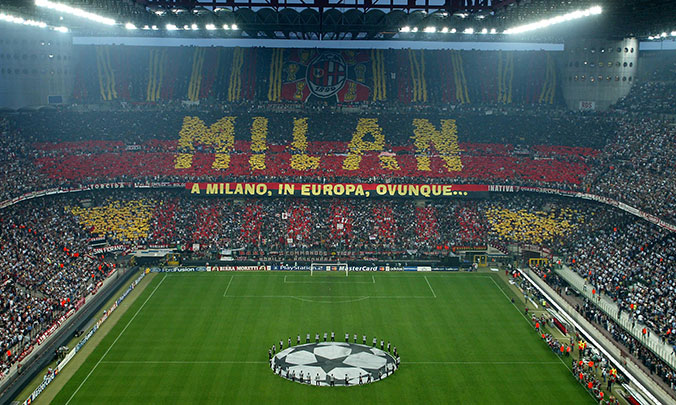
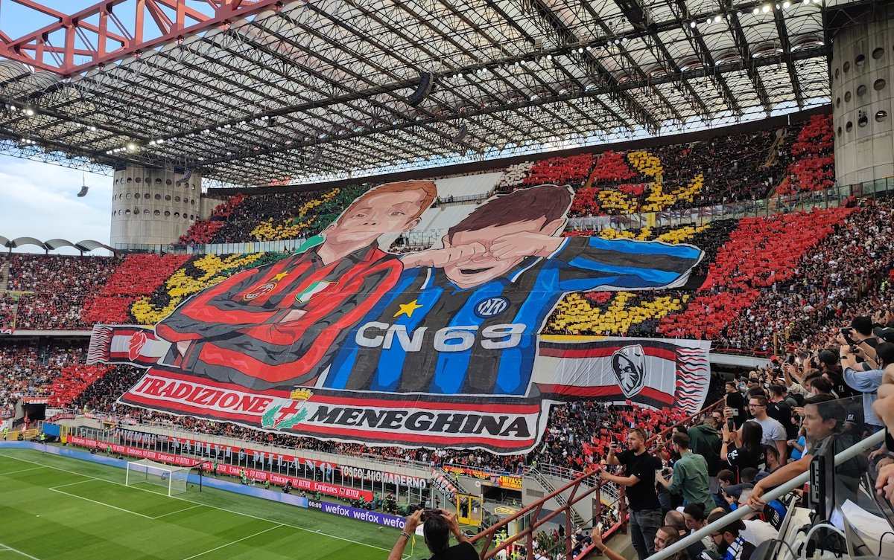
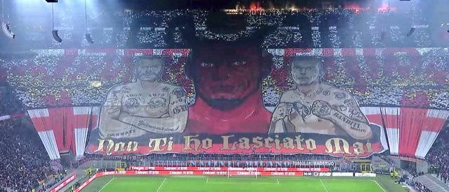

AC Milan, formed in 1899, is an Italian football club based in Milan, Italy. Represented by the colors red and black "Rossoneri", Milan is one of the most decorated clubs in football history. 7 UCLs and 19 league titles are just the foundation of what football heritage means to the world today.
Untiy, Passion and Love are the virtues Milan plays every game on. These emotions fly high especially during derby nights. The "Derby della Madonia" is the match played between AC Milan and our rivals Inter Milan. The city is divided on nights like these and the roar of the San Siro can be heard everywhere. San Siro is the home stadium for Milan and Inter and has been around since the 1930s
The Curva Sud "South curve" is the name given to the south end of the San Siro and the name of the Ultras fan group of Milan. The curva sud are die hard Milan fans who spend every ounce of their time and money towards the club and have passion passed down from generations. They are responsible for decortating the stadium prior to games and they start the chants. Leaders of the Curva Sud have even personally talked to the team after tough losses to manifest their ultra support.
Visit these links Curva Sud convo Website Promo Video